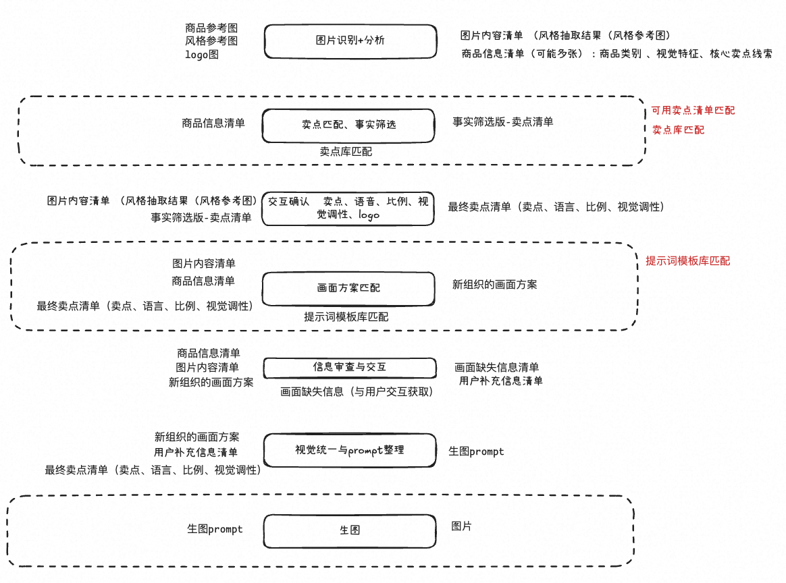
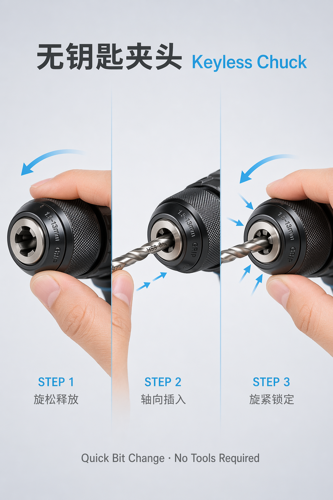
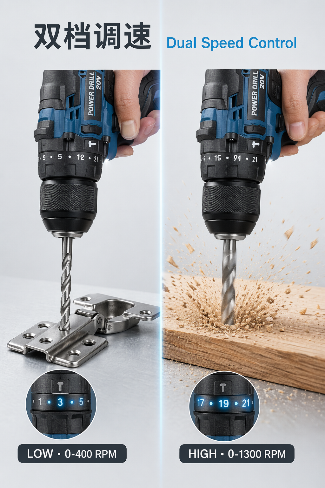

生成链路

从图片识别、卖点筛选、画面方案到生图交付的完整链路。
Skill Case
围绕商品输入、卖点筛选、Prompt 组织和最终卖点图生成，建立“逻辑 + 结果”都能展示的业务 Skill。

从图片识别、卖点筛选、画面方案到生图交付的完整链路。
商品输入示例，用于抽取商品特征和核心卖点。
卖点图结果，用于展示从输入到输出的实际生成效果。

同一商品方向下的另一种视觉表达。

可作为作品集里“逻辑 + 结果”展示的主案例。
建议再补一张 Claude 交互截图，最好包含“用户输入、Skill 中间判断、最终 Prompt”三段，和这组结果图形成完整闭环。